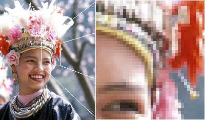
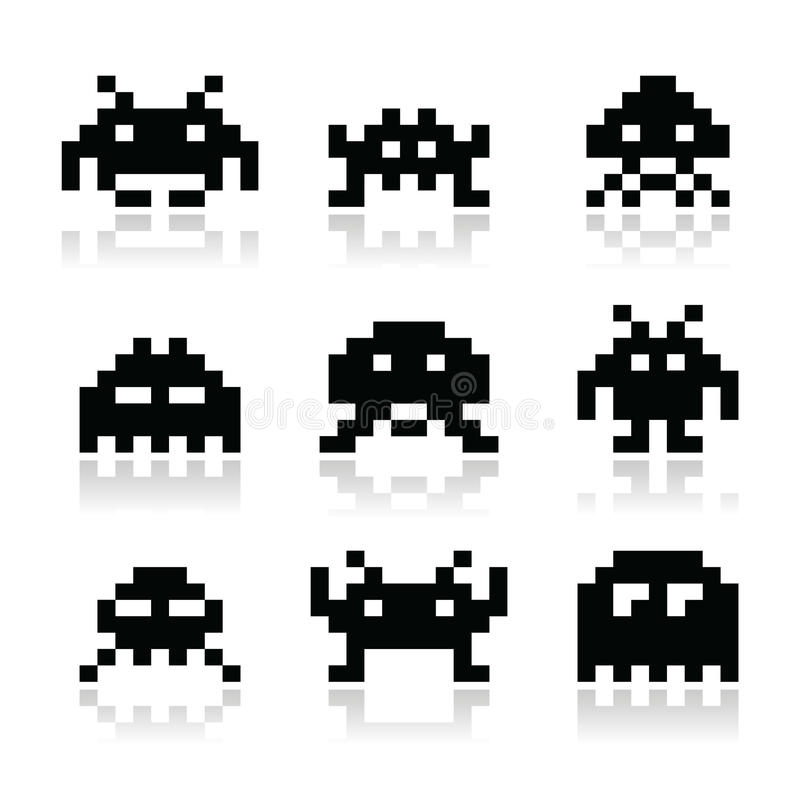

TP-REDO-01 : les images matricielles
Contents

TP-REDO-01 : les images matricielles#
Objectifs pédagogiques#
appliquer la représentation de l’information au monde des images numériques matricielles
connaître la définition d’un pixel N/B et d’un pixel couleur
connaître les caractéristiques d’une image matricielle
créer une image matricielle N/B, en niveaux de gris et en couleur avec les formats PGM et PPM
Définition d’un pixel#
Définition : un pixel (de l’anglais picture element) est l’unité de base d’une image numérique matricielle.
On la présente habituellement comme un élément de surface.
Le codage RGB#
Le système de codage couleur (représentation de l’information couleur) est le système RGB ou système Rouge-Vert-Bleu (de l’anglais Red-Green-Blue).

Le couleur est représentée par trois valeurs : une partie Rouge, une partie Verte et une partie Bleue. Il est d’usage d’utiliser un byte par couleur primaire, donc 3 bytes par pixel.
ATTENTION : les trois couleurs primaires sont décrite dans l’ordre ROUGE, VERT puis BLEU.
Voici quelques couleurs (ou valeurs) aux limites :
Valeur du ROUGE |
Valeur du VERT |
Valeur du BLEU |
Résultat |
|---|---|---|---|
|
|
|
rouge |
|
|
|
vert |
|
|
|
bleu |
|
|
|
noir |
|
|
|
blanc |
|
|
|
gris intermédiaire |
Exercice 1 : Valeurs de RGB#
Jouez avec des valeurs RGB online sur le site w3schools.net
Quelles sont les valeurs RGB des couleurs:
Jaune
Cyan
Magenta
Définition : image matricielle#
Définition : une image matricielle est un tableau (une grille) de pixels (de l’objet mathématique matrice) classé sous la forme d’une carte (de l’anglais bitmap). Chaque pixel de l’image matricielle possède 2 caractéristiques : (1) sa position dans le tableau et (2) sa couleur

Le format PGM/PPM#
Les formats PGM (de l’anglais Portable Graymap) pour les images noir et blanc (N/B) et PPM (de l’anglais Portable Pixmap) pour les images couleur sont des formats de fichiers graphiques premettant de décrire simplement une image matricielle.
Dans ce travail pratique, nous allons utiliser la forme la plus simple de ces deux formats: le format texte.
Composition d’un fichier PGM/PPM#
Les deux formats sont constitués de la même base :
un en-tête (de l’anglais header) qui permet de décrire les caractéristiques de l’images
un mot magique (
P1pour les images noir/blanc,P2pour les images en niveaux de gris,P3pour les images couleurla taille de l’image en pixels (colonnes x lignes)
le nombre de niveaux maximum par pixel (par ex: nombre de niveaux de gris, ou couleurs. de 2 à 255)
l’image elle-même décrite pixel par pixel
les valeurs des pixels de l’image du coin en haut à gauche vers le coin en bas à droite
Image N/B#
Dans une image noir et blanc, on utilise le mot-magique P1 et chaque pixel est décrit par un 0 pour du blanc, un 1 pour du noir.
P1
# Un exemple bitmap de la lettre "J"
7 10
0 0 0 0 0 0 0
0 0 0 0 0 1 0
0 0 0 0 0 1 0
0 0 0 0 0 1 0
0 0 0 0 0 1 0
0 0 0 0 0 1 0
0 0 0 0 0 1 0
0 1 0 0 0 1 0
0 0 1 1 1 0 0
0 0 0 0 0 0 0
Ce qui donne :

Exercice 2 : Création d’une image N/B#
Ouvrez l’éditeur de texte Atom
Précisez que le format sera du texte pur : Format -> Make Plain Text
Créez une images noir et blanc
Sauvez votre fichier sous le nom image1.pgm sur votre volume Enseignement > nom_utilisateur
Ouvrez le finder et double-cliquez sur le fichier créé. La combinaison de touches OPTION + SHIFT +
+
Choisissez votre spaceinvader et reproduisez-le. La dimension de l’image doit être de 9 x 9 pixels soit 81.

Image en niveaux de gris#
En niveau de gris, on utilise le mot magique P2 et on précise le nombre de niveaux de gris avant la description de l’image (nombre de niveaux de gris : de 2 à 255).
P2
# Affiche le mot "FEEP" (exemple de la page principale de Netpbm à propos de PGM)
24 7
# Nombre de niveaux de gris
15
0 0 0 0 0 0 0 0 0 0 0 0 0 0 0 0 0 0 0 0 0 0 0 0
0 3 3 3 3 0 0 7 7 7 7 0 0 11 11 11 11 0 0 15 15 15 15 0
0 3 0 0 0 0 0 7 0 0 0 0 0 11 0 0 0 0 0 15 0 0 15 0
0 3 3 3 0 0 0 7 7 7 0 0 0 11 11 11 0 0 0 15 15 15 15 0
0 3 0 0 0 0 0 7 0 0 0 0 0 11 0 0 0 0 0 15 0 0 0 0
0 3 0 0 0 0 0 7 7 7 7 0 0 11 11 11 11 0 0 15 0 0 0 0
0 0 0 0 0 0 0 0 0 0 0 0 0 0 0 0 0 0 0 0 0 0 0 0
Ce qui donne :

Exercice 3 : Création d’une image en niveaux de gris#
Même procédure qu’à l’exercice 2
Créez votre prénom avec un dégradé de gris
Image en couleurs RGB#
En couleur, on utilise le mot magique P3 et chaque pixel de couleur est décrit par la valeur de rouge, de vert et de bleu.
P3
# Le P3 signifie que les couleurs sont en ASCII, et qu'elles sont en RGB.
# Par 5 colonnes et 5 lignes:
5 5
# Ayant 255 pour valeur maximum:
255
255 0 0
255 0 0
255 0 0
255 0 0
255 0 0
255 0 0
255 0 0
255 255 255
255 0 0
255 0 0
255 0 0
255 255 255
255 255 255
255 255 255
255 0 0
255 0 0
255 0 0
255 255 255
255 0 0
255 0 0
255 0 0
255 0 0
255 0 0
255 0 0
255 0 0
Ce qui donne :

Exercice 4 : Création d’une image couleur#
Même procédure qu’à l’exercice 2
Créez les drapeaux de l’ITALIE, de l’ALLEMAGNE et de la FRANCE en choisissant une taille de grille adéquate
Enregistrez votre fichier avec l’extension .ppm (exemple : france.ppm)


Exercice 5 (pour aller plus loin)#
Dès le début des années 1980 jusqu’à la fin des années 1990, la technologie et les techniques de programmation de jeux vidéo étaient devenues assez puissantes pour proposer des graphismes et des sons de qualité. Les jeux vidéos dits jeux d’arcade étaient alors installés dans des bornes d’arcade et placés dans les commerces à des fins d’amusement. Ils ont progressivement remplacés les jeux mécaniques (flippers).

La technologie informatique était limitée par (1) la longueur des bytes traités par l’ordinateur et (2) les limites physiques des écrans cathodiques. Il a fallu donc créer des polices de caractères simples. Ce sont les fameuses polices de caractères dits 8 bits. En voici un exemple.
Reproduisez quelques lettres de l’alphabet
Est-ce possible de créer le drapeau Vaudois avec toute ce que vous avez vu dans ce TP. Essayez !